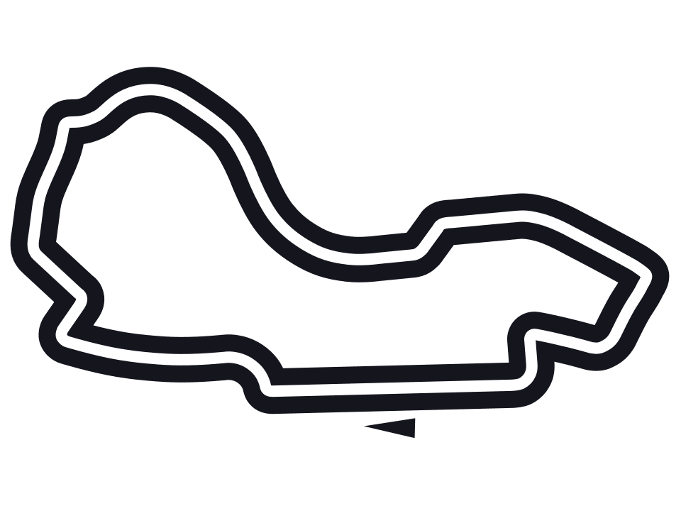
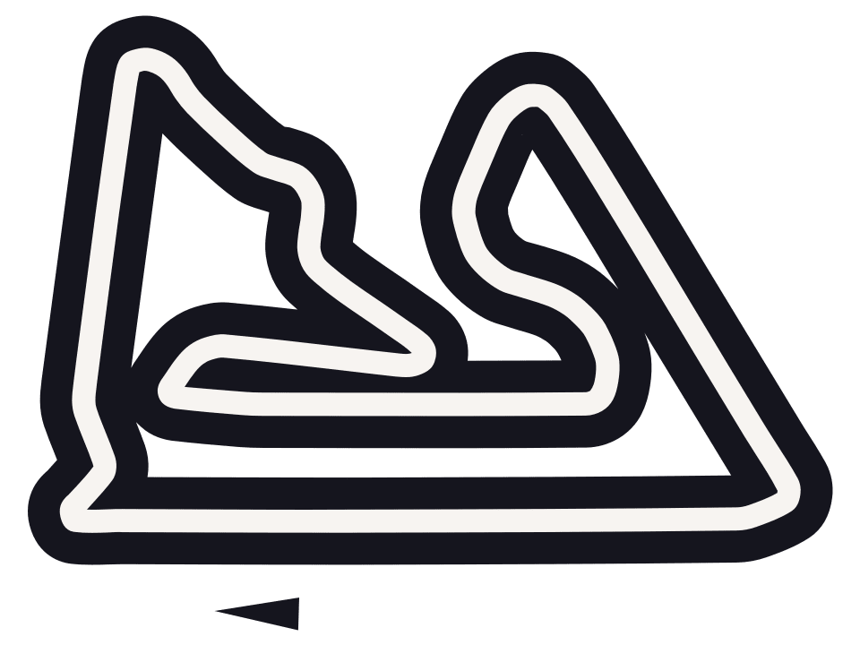
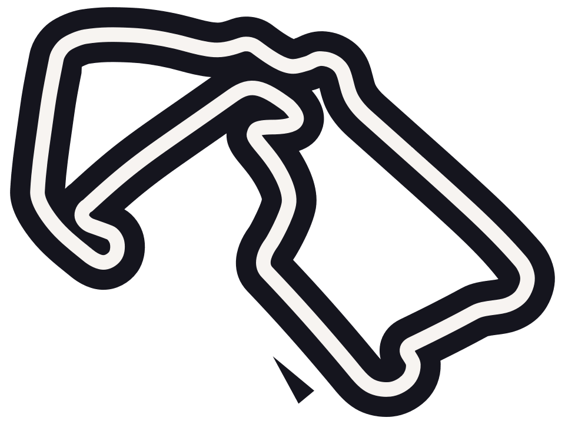
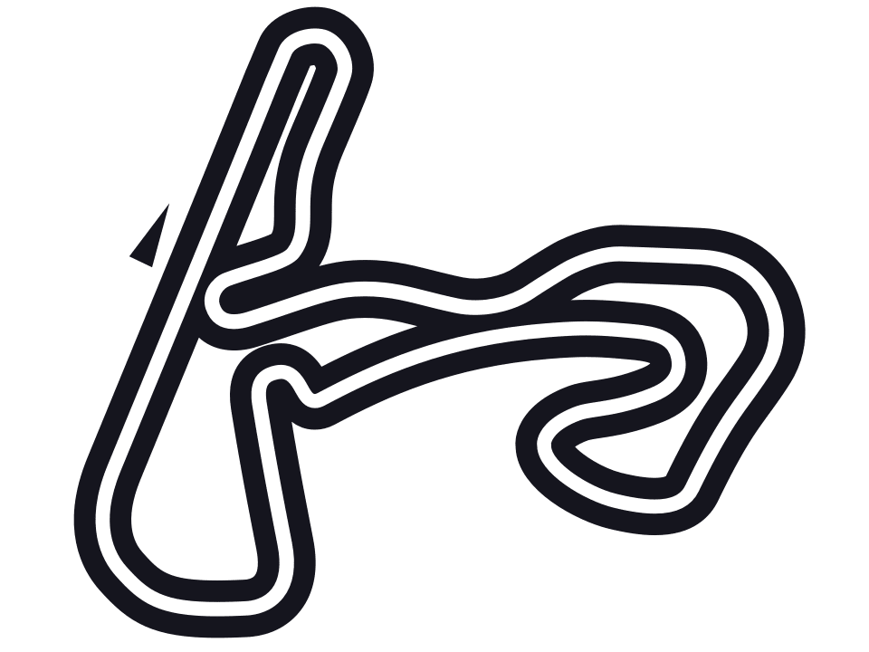
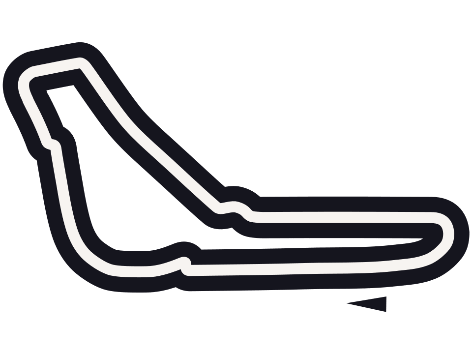
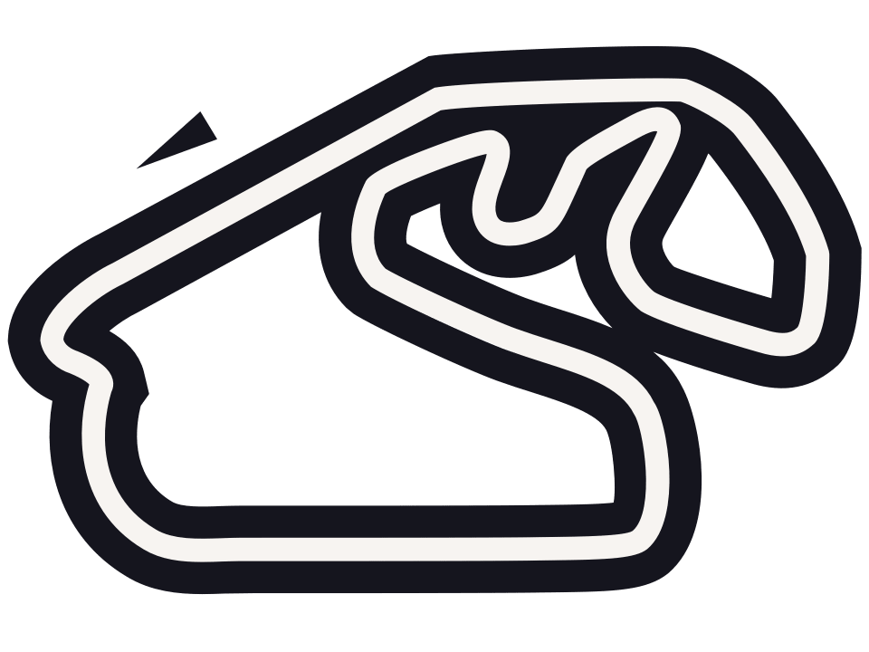

Os palcos da velocidade: conheça os circuitos da temporada 2025
A Fórmula 1 não é feita apenas de carros velozes e pilotos talentosos — ela ganha vida nos circuitos ao redor do mundo. Cada pista tem sua personalidade: curvas lendárias, retas imponentes, variações de altitude e histórias que ajudaram a moldar o automobilismo como o conhecemos. Em 2025, o calendário da F1 percorre 24 etapas em cinco continentes, visitando autódromos icônicos e circuitos urbanos desafiadores, combinando tradição, inovação e espetáculo. Dos traçados históricos de Mônaco, Silverstone e Monza às estreias mais recentes como Las Vegas e Jeddah, cada pista traz um cenário único onde estratégia, coragem e precisão são colocadas à prova. A variedade do calendário é um verdadeiro teste de versatilidade para as equipes e pilotos, fazendo de cada corrida uma experiência única tanto para quem está na pista quanto para os fãs ao redor do mundo. Abaixo, você encontra os circuitos da temporada 2025 organizados por ordem de data.
-

Albert Park Grand Prix Circuit
Um traçado semiurbano rápido e técnico, em meio aos parques de Melbourne. O circuito de Albert Park é um dos mais tradicionais da era moderna da Fórmula 1. Recebeu sua primeira corrida em 1996 e costuma abrir a temporada. Sua localização em um parque urbano cria um misto de traçado de rua com circuito permanente.
-

Shanghai International Circuit
Conhecido por sua longa reta e curvas desafiadoras em formato de caracol. Projetado por Hermann Tilke, o circuito de Xangai entrou no calendário da F1 em 2004. Foi construído em tempo recorde, transformando uma área pantanosa em uma das instalações mais modernas da Fórmula 1. Após uma pausa por conta da pandemia, retornou ao calendário com grande expectativa.
-

Suzuka Circuit
Um dos circuitos mais técnicos do mundo, com layout em “8”, construído em 1962 como pista de testes para a Honda. Desde sua estreia na Fórmula 1 em 1987, tem sido palco de corridas memoráveis e decisões de campeonatos. Suzuka é um dos circuitos mais icônicos da Fórmula 1. É conhecido pelas corridas emocionantes e pelo público apaixonado.
-

Bahrain International Circuit
Corrida noturna com grande foco em potência e tração. Primeiro circuito no Oriente Médio a sediar a F1, o GP do Bahrein estreou em 2004. É conhecido por suas corridas noturnas desde 2014 e pelo cenário desértico. Projetado por Hermann Tilke, combina retas longas e curvas técnicas, oferecendo desafios únicos para pilotos e engenheiros.
-

Jeddah Corniche Circuit
Rápido e estreito, este circuito urbano exige precisão milimétrica. O Jeddah Corniche Circuit é conhecido por ser um dos circuitos de rua mais rápidos do calendário da Fórmula 1. Localizado à beira do Mar Vermelho, em Jeddah, Arábia Saudita, o traçado desafiador e a corrida noturna proporcionam um espetáculo único. Projetado por Carsten Tilke, foi inaugurado em 2021.
-

Miami International Autodrome
Traçado misto montado ao redor do Hard Rock Stadium. Estreando em 2022, o circuito de Miami é montado ao redor do Hard Rock Stadium. Ele mistura velocidade com seções técnicas, oferecendo uma experiência americana típica e um ambiente de festival.
-

Autodromo Internazionale Enzo e Dino Ferrari
Histórico e técnico, com trechos estreitos e rápidos. O circuito de Imola, nomeado em homenagem a Enzo e seu filho Dino Ferrari, é um dos mais tradicionais da Fórmula 1. Sediou seu primeiro GP em 1980 e é lembrado por momentos marcantes, incluindo a trágica morte de Ayrton Senna em 1994. Mais conhecido como Ímola, esse tradicional circuito italiano sediou o GP de San Marino por muitos anos e voltou oficialmente ao calendário em 2020.
-

Circuit de Monaco
O mais tradicional dos circuitos urbanos, onde cada milímetro conta. O GP de Mônaco é o mais glamouroso da F1. Disputado nas ruas de Monte Carlo, o circuito é estreito e desafiador, com ultrapassagens raras e muita tradição. Inaugurado em 1929, faz parte do calendário da F1 desde 1950.
-

Circuit de Barcelona-Catalunya
Inaugurado em 1991, o Circuito de Barcelona-Catalunya foi construído como parte do programa de desenvolvimento para os Jogos Olímpicos de Barcelona em 1992. Desde então, tornou-se uma peça central no calendário da Fórmula 1, conhecido por sua combinação de curvas de alta e baixa velocidade que testam a aerodinâmica e o equilíbrio dos carros. É conhecido por seu traçado técnico e desafiador. Em 2023, o traçado foi modificado, removendo a chicane final para melhorar o fluxo das corridas.
-

Circuit Gilles-Villeneuve
Rápido, com freadas fortes e o famoso “Muro dos Campeões”. Localizado na Ilha de Notre-Dame, em Montreal, o Circuit Gilles Villeneuve é conhecido por suas longas retas e curvas desafiadoras. Desde 1978, é palco do GP do Canadá, proporcionando corridas emocionantes e imprevisíveis.
-

Red Bull Ring
Curto e veloz, com belas paisagens austríacas ao fundo. Originalmente conhecido como Österreichring, o circuito foi reformulado e reaberto como Red Bull Ring em 2011. Localizado em Spielberg, Áustria, é conhecido por suas elevações e curvas rápidas.
-

Silverstone Circuit
Silverstone é o berço da Fórmula 1, tendo sediado a primeira corrida do campeonato mundial em 1950. Originalmente um aeródromo da RAF, o circuito evoluiu ao longo dos anos, mantendo-se como uma das pistas mais rápidas e desafiadoras do calendário.
-

Circuit de Spa-Francorchamps
Um dos favoritos do grid, com o icônico trecho Eau Rouge-Raidillon. Localizado nas Ardenas belgas, Spa-Francorchamps é um dos circuitos mais antigos e icônicos da Fórmula 1. Inaugurado em 1921, o circuito original utilizava estradas públicas e tinha quase 15 km de extensão. Após várias modificações, o traçado atual possui 7,004 km e é o circuito mais longo do calendário atual da F1.
-

Hungaroring
Estreito e travado, é comparado a um “kartódromo gigante”. O Hungaroring, localizado nos arredores de Budapeste, foi construído em apenas nove meses e sediou seu primeiro Grande Prêmio em 1986. Conhecido por seu layout sinuoso e estreito, é frequentemente comparado a um kartódromo, exigindo precisão e ritmo dos pilotos.
-

Circuit Zandvoort
Repleto de curvas inclinadas e atmosfera vibrante da torcida holandesa. O Circuit Zandvoort, situado nas dunas da costa holandesa, foi inaugurado em 1948 e sediou seu primeiro GP de F1 em 1952. Após um hiato de 36 anos, retornou ao calendário da F1 em 2021 com um traçado modernizado que preserva curvas desafiadoras como a Tarzanbocht.
-

Autodromo Nazionale Monza
Conhecido como o "Templo da Velocidade", Monza é um dos circuitos mais antigos e rápidos da Fórmula 1. Desde 1950, tem sido palco de corridas emocionantes e é um ícone do automobilismo mundial.
-

Baku City Circuit
Mistura de altas velocidades e setor urbano apertado no coração do Azerbaijão. Inaugurado em 2016, o circuito de rua de Baku combina seções estreitas com longas retas, proporcionando corridas imprevisíveis.
-

Marina Bay Street Circuit
Primeira corrida noturna da F1, exigente física e mentalmente. Sediando o primeiro GP noturno da F1 em 2008, o circuito de Marina Bay, em Singapura, é conhecido por seu traçado desafiador e clima úmido. As corridas sob luzes artificiais oferecem um espetáculo único no calendário.
-

Circuit of The Americas
Moderna, com setores inspirados em pistas europeias clássicas. Inaugurado em 2012, o Circuit of the Americas, em Austin, Texas, é o primeiro circuito dos EUA construído especificamente para a F1. Com elevações e curvas inspiradas em outros circuitos famosos, oferece corridas emocionantes. Projetado por Hermann Tilke em colaboração com a HKS, o circuito é conhecido por seu traçado desafiador e por sediar eventos de diversas categorias do automobilismo.
-

Autódromo Hermanos Rodríguez
Localizado na vibrante Cidade do México, o Hermanos Rodríguez é puro coração latino nas pistas. Com altitude acima dos 2.200 metros, o ar é rarefeito e os carros atingem altas velocidades. O circuito é famoso pela reta enorme e pela icônica curva dentro do estádio Foro Sol.
-

Autódromo José Carlos Pace
Traçado dinâmico e imprevisível, palco de finais épicos. Situado em São Paulo, Brasil, o Autódromo José Carlos Pace, conhecido como Interlagos, é um dos circuitos mais tradicionais da Fórmula 1. Inaugurado em 1940, passou por diversas reformas ao longo dos anos e é famoso por suas corridas emocionantes e clima imprevisível.
-

Las Vegas Strip Circuit
Luxo, luzes e velocidade no mais novo circuito urbano da F1. O Las Vegas Strip Circuit é um circuito de rua inaugurado em 2023, que percorre as famosas avenidas de Las Vegas, incluindo a icônica Las Vegas Strip. Projetado por Carsten Tilke, o circuito é conhecido por suas altas velocidades e pelo cenário noturno deslumbrante da cidade.
-
Lusail International Circuit
Pista técnica no Catar, com curvas rápidas e grande visibilidade. Localizado nos arredores de Doha, Catar, o Lusail International Circuit foi construído em 2004 para sediar eventos de MotoGP. A Fórmula 1 realizou sua primeira corrida no circuito em 2021, e desde então, Lusail se tornou uma parada regular no calendário da F1.
-

Yas Marina Circuit
Encerramento da temporada com estrutura moderna e corrida noturna. O Yas Marina Circuit, situado em Yas Island, Abu Dhabi, foi inaugurado em 2009 e é conhecido por sua infraestrutura moderna e pelo fato de sediar a última etapa da temporada de Fórmula 1. O circuito passou por modificações em 2021 para melhorar as oportunidades de ultrapassagem.